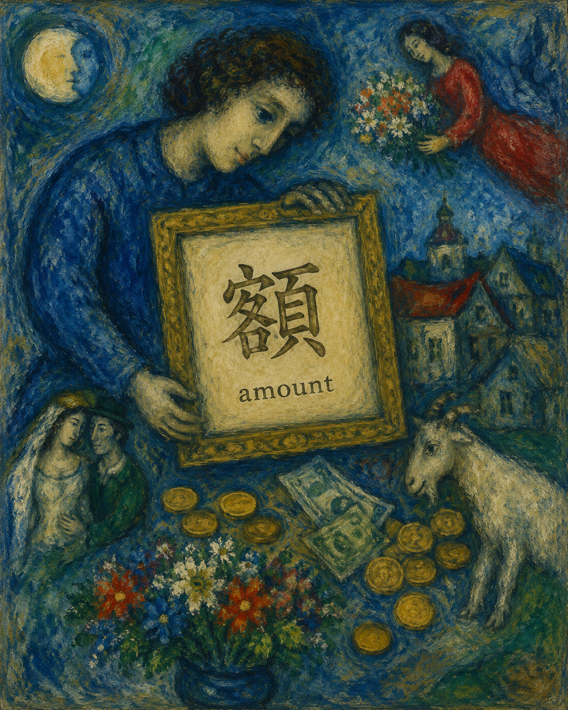
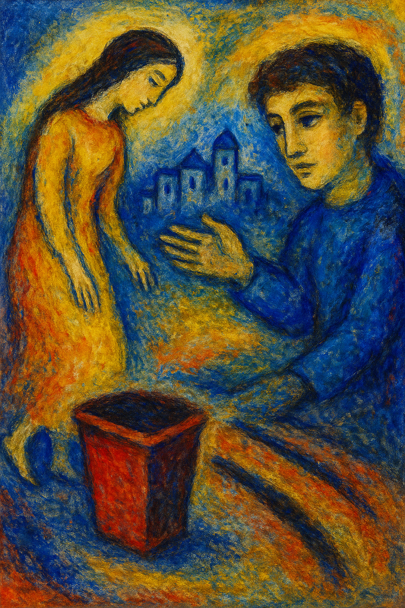
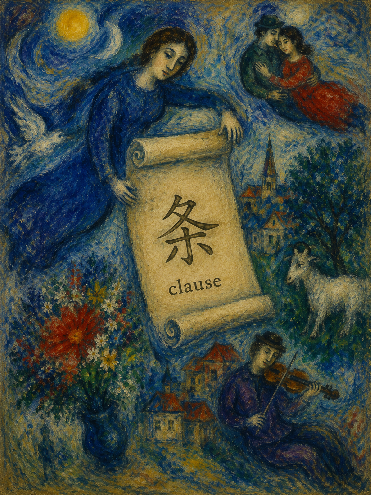

💡 Tip: Click the featured kanji to view stroke order animations

追い迫る影の中で、
人は決断を迫られてゆく。
急ぐ心は夜を深くする。
Within pursuing shadows,
one is pressed toward decision.
A hurried heart deepens the night.

逃げる足音の先にも、
なお月は静かに照らしている。
恐れは長く追いかけてくる。
Even beyond fleeing footsteps,
the moon continues shining quietly.
Fear pursues for a long time.

町外れの静かな道に、
人の暮らしの気配が残る。
辺境にも物語がある。
Along the quiet edge of town
lingers the trace of daily life.
Even the outskirts hold stories.

眠らぬ街を歩きながら、
誰かが静かに秩序を守る。
巡る足音は夜を支える。
Walking through the sleepless town,
someone quietly guards the order.
Patrolling footsteps uphold the night.

古びた車輪の向こうに、
まだ見ぬ景色が待っている。
旅は回転から始まる。
Beyond the aging wheels
await landscapes yet unseen.
A journey begins with turning.

ひとりで進むよりも、
誰かを連れて歩く方が温かい。
共に行く道は長く続く。
Warmer than walking alone
is carrying someone beside you.
Shared roads continue farther.

同じ轍を繰り返しても、
心だけは迷い続ける。
軌跡は過去を映している。
Even along repeated tracks,
the heart continues wandering.
Ruts reflect the past.

小さな車の灯りが、
人と人を静かに結んでゆく。
運ばれるのは荷だけではない。
The small vehicle's lights
quietly connect one life to another.
More than cargo is carried.

言葉にならぬ想いほど、
たとえ話に姿を変える。
比喩は心の橋である。
Feelings beyond plain speech
transform themselves into metaphor.
Comparison becomes a bridge of the heart.

前へ進むその一歩に、
まだ見えぬ未来が眠っている。
振り返るだけでは届かない。
Within the step forward
sleeps an unseen future.
One cannot arrive by only looking back.

火を囲む静かな時間に、
人の距離は少し近づく。
温もりは炎から広がる。
Within the quiet time around fire,
people draw a little closer.
Warmth spreads from flame.

同じ空の下であっても、
人はそれぞれ違う夢を見る。
各々の道がある。
Even beneath the same sky,
each person dreams differently.
Everyone walks a separate road.

身分や肩書きよりも、
人を示すのは振る舞い。
格は静かな所作に宿る。
More than title or rank,
conduct reveals the person.
True status lives in quiet bearing.

差し出された小さな袋が、
正しき道を曇らせてゆく。
欲は静かに腐敗を招く。
The small offered pouch
slowly clouds the rightful way.
Desire quietly invites corruption.

長き言葉を縮めても、
本質だけは残り続ける。
省略にも知恵がある。
Even shortened words
retain their essential meaning.
There is wisdom in abbreviation.

遠き旅の疲れを、
静かな灯りが迎え入れる。
客人には席が用意される。
The weariness of distant travel
is welcomed by gentle light.
A place is prepared for the guest.

積み重ねられた金貨にも、
人の願いや労苦が映る。
数字は人生を語ることがある。
Even within gathered coins
are reflected toil and longing.
Numbers can speak of lives.

まぶしい陽の下では、
眠気さえ夢のように漂う。
夏は時をゆるやかにする。
Beneath the brilliant sun,
even drowsiness drifts like a dream.
Summer slows the passage of time.

手放すことによって、
新しい場所が静かに生まれる。
処分もまた選択のひとつ。
By letting go,
new space quietly appears.
Disposal too is a choice.

細かく記された一条にも、
人の約束が込められている。
契約は言葉で築かれる。
Even within a single clause
rests the weight of agreement.
Contracts are built from words.